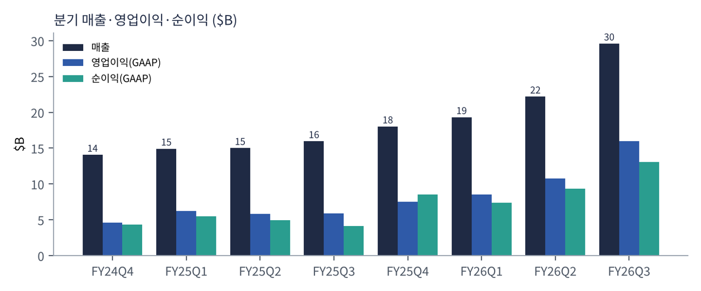
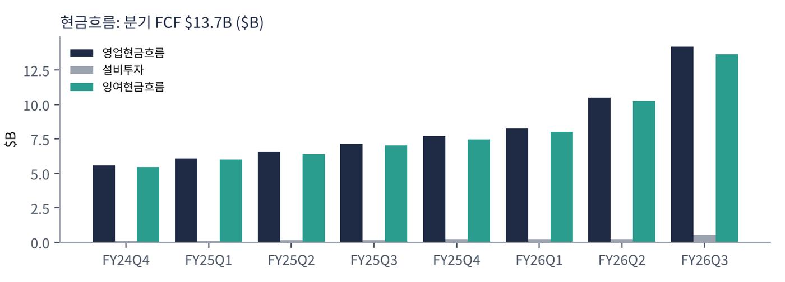
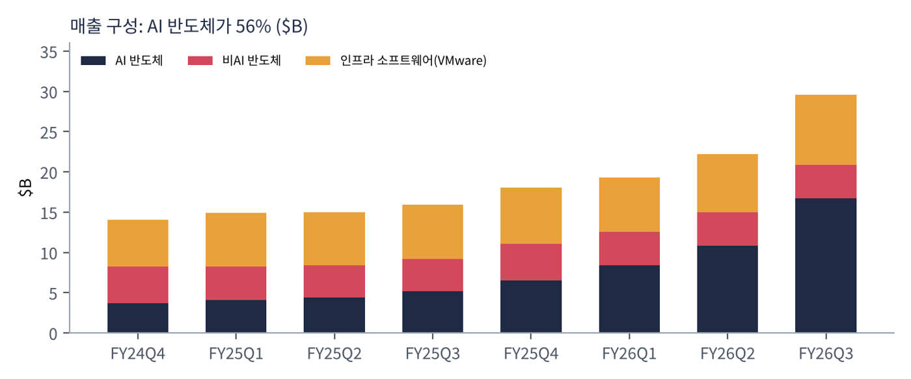
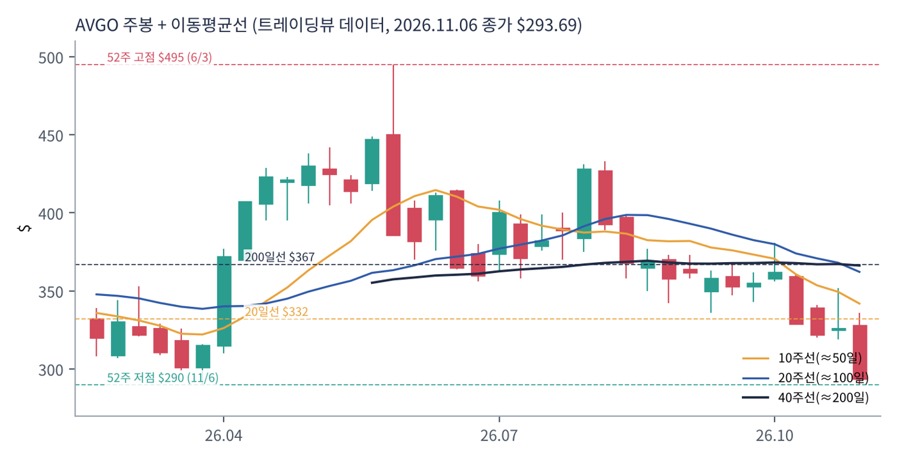
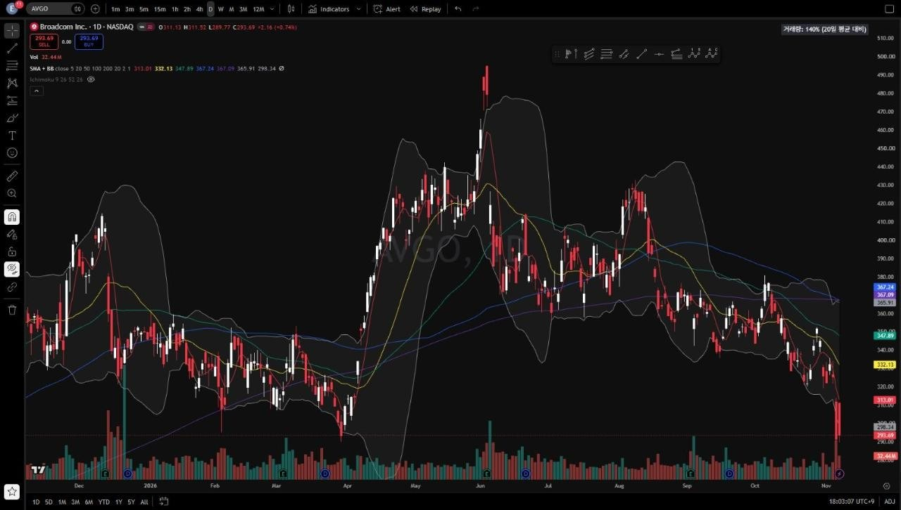
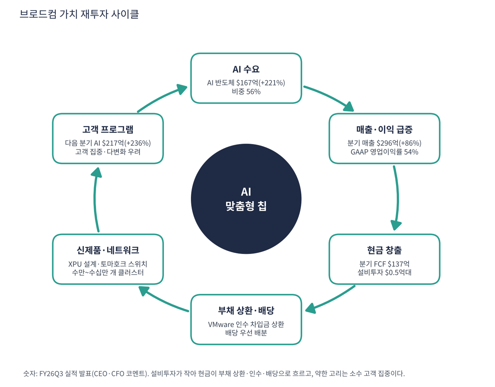

브로드컴은 두 가지 사업을 한다. 하나는 반도체로, 구글 TPU 같은 맞춤형 AI 칩과 데이터센터 이더넷 스위치·NIC, 광통신 칩, 스마트폰용 무선 칩, 스토리지 칩을 만든다. 다른 하나는 인프라 소프트웨어로, 2023년 인수한 VMware(가상화)와 메인프레임·보안 소프트웨어다. 지금은 매출의 56%가 AI 반도체다.
| 항목 | 내용 |
|---|---|
| 종목 | Broadcom Inc. (AVGO) · NASDAQ · 반도체·소프트웨어 · 본사 캘리포니아주 팰로앨토 |
| 시가총액 | 약 $1.40조 · TTM PER 37.5배 · 희석 주식 약 47.5억 주 (트레이딩뷰, 11/6 종가 $293.69) |
| 최근 분기(FY26Q3) | 매출 $29.6B(+86%), AI 반도체 $16.7B(+221%), GAAP 영업이익 $16.0B, 순이익 $13.1B, FCF $13.7B, 비GAAP EPS $3.32 |
| 다음 분기 가이던스 | FY26Q4 매출 $34.8B(+93%), AI 반도체 $21.7B(+236%), 비GAAP 영업이익률 66% |
| 주주환원·자본 배분 | 분기 FCF를 배당과 VMware 인수 차입금 상환에 우선 사용 |
| 다음 실적 | FY26Q4: 2026년 12월 중순 발표 예정 (회계연도는 11월 초 종료) |
| 직책 | 인물 | 역할·특징 |
|---|---|---|
| 사장 겸 CEO | 혹 탄 | 인수합병으로 성장한 반도체·소프트웨어 그룹의 설계자. "맞춤형 AI 가속기와 네트워킹 수요는 계속 매우 강하다"(FY26Q3). 없어서는 안 될 기술을 가진 회사를 사서 효율을 극대화하는 전략 |
| CFO | (실적 발표문 기준) | 다음 분기 비GAAP 영업이익률 66% 유지, AI 매출 가이던스를 분기마다 제시 |
경영 스타일: '핵심 기술을 사서 이익률을 끌어올리고, 그 현금으로 다음 핵심 기술에 투자한다'. VMware 인수 후 영구 라이선스를 구독으로 바꾸고 대형 고객 중심으로 재편해 이익률을 올렸다. AI 쪽에서는 맞춤형 칩 비중이 급증했는데도 마진이 떨어지지 않았다는 점이 마벨 등 경쟁사와 다르다.
하이퍼스케일러가 자기 모델에 최적화된 칩을 원할 때 설계 IP(서데스·패키징·HBM 인터페이스)와 TSMC 생산 관리까지 대신 해 준다. 수십만 개 가속기를 묶는 이더넷 스위치(토마호크·제리코)와 NIC, 광 부품도 공급한다.
엔비디아의 인피니밴드·NVLink에 맞서는 개방형 네트워크와 고객 자체 칩 설계 지원이 핵심이다. 빅테크가 엔비디아 의존을 줄이려 할수록 시장이 커진다.
| 분기 (종료월) | 매출 | YoY | AI 반도체 | 소프트웨어 | GAAP 매출총이익률 | GAAP 영업이익 | 영업이익률 | 순이익 | FCF | 특이 사항 |
|---|---|---|---|---|---|---|---|---|---|---|
| FY24Q4 (24.10) | $14.1B | +51% | $3.7B | $5.8B | 64.1% | $4.6B | 32.6% | $4.3B | $5.5B | |
| FY25Q1 (25.1) | $14.9B | +25% | $4.1B | $6.7B | 68.0% | $6.3B | 42.3% | $5.5B | $6.0B | |
| FY25Q2 (25.5) | $15.0B | +20% | $4.4B | $6.6B | 68.0% | $5.8B | 38.7% | $5.0B | $6.4B | |
| FY25Q3 (25.8) | $16.0B | +22% | $5.2B | $6.8B | 67.1% | $5.9B | 36.9% | $4.1B | $7.0B | |
| FY25Q4 (25.11) | $18.0B | +28% | $6.5B | $6.9B | 68.0% | $7.5B | 41.7% | $8.5B | $7.5B | 순이익에 일회성 이익 |
| FY26Q1 (26.2) | $19.3B | +29% | $8.4B | $6.8B | 68.1% | $8.6B | 44.6% | $7.3B | $8.0B | |
| FY26Q2 (26.5) | $22.2B | +48% | $10.8B | $7.2B | 69.5% | $10.8B | 48.6% | $9.3B | $10.3B | AI +143% |
| FY26Q3 (26.8) | $29.6B | +86% | $16.7B | $8.8B | 69.1% | $16.0B | 54.1% | $13.1B | $13.7B | AI +221%, 소프트웨어 +29% |


흐름 요약: 매출 성장률이 FY25 내내 +20%대였다가 +29% → +48% → +86%로 계단식으로 올랐고, 다음 분기 가이던스는 +93%다. 전부 AI 반도체 덕분이다. AI 매출 성장률은 +74% → +106% → +143% → +221%로 매 분기 빨라졌고 매번 직전 가이던스를 넘었다. AI 비중이 커질수록 이익률도 올랐다. GAAP 영업이익률이 FY25Q3 36.9%에서 FY26Q3 53.9%로 올랐다. FY24Q4~FY25Q3의 AI 매출은 성장률로 역산한 근사치다.
| 매출원 | 돈을 버는 방식 | FY26Q3 매출 | 성장 |
|---|---|---|---|
| AI 반도체 | 하이퍼스케일러 맞춤형 AI 가속기(XPU) 설계·양산, AI 클러스터용 이더넷 스위치(토마호크·제리코), AI NIC, 광 부품 | $16.7B | +221% |
| 비AI 반도체 | 일반 데이터센터 네트워크, 광대역·셋톱박스, 스마트폰 무선 칩(애플 등), 스토리지·산업용 | $4.1B | +4% |
| 인프라 소프트웨어 | VMware 클라우드 파운데이션 구독, 메인프레임·보안·네트워크 관리 소프트웨어 | $8.8B | +29% |
| 합계 (반도체 70% / 소프트웨어 30%) | $29.6B | +86% |

브로드컴은 이제 'AI 회사 + 소프트웨어 회사'다. 1년 전 소프트웨어는 매출의 43%였지만 지금은 30%이고 비AI 반도체는 25%에서 14%로 줄었다. 비AI 반도체는 +4%로 정체돼 회사의 성장은 사실상 AI 하나에 달려 있다. VMware는 현금 엔진이다. AI 반도체가 분기마다 크게 출렁여도 소프트웨어(분기 +29%, 최근 2년 중 최고)가 마진 바닥을 받쳐 준다. AI 매출 중 맞춤형 가속기와 네트워킹의 비중, 고객별 매출은 공개되지 않는다.
혹 탄 CEO의 전략은 일관된다. '없어서는 안 될 기술'을 가진 회사를 사서 효율을 극대화하고, 그 현금으로 다음 핵심 기술에 투자한다. 지금 그 핵심 기술은 세 가지다.
| 축 | 내용 |
|---|---|
| 맞춤형 AI 가속기 | 대형 AI 고객이 자기 모델에 최적화된 칩을 원할 때, 설계 IP와 TSMC 생산 관리까지 대신 해 줌 |
| AI 네트워킹 | 수십만 개의 가속기를 하나의 클러스터로 묶는 이더넷 스위치와 NIC. 엔비디아 인피니밴드·NVLink에 맞서는 '개방형' 대안 |
| 소프트웨어 | VMware로 기업 데이터센터의 운영 체제를 장악, 프라이빗 AI 클라우드로 확장 |


위: 트레이딩뷰 주봉 데이터로 재구성(10·20·40주선). 아래: 트레이딩뷰 공개 차트 일봉 캡처(작도 숨김, 이동평균선·볼린저밴드만 표시).
| 이동평균 | 값 | 종가 대비 | 해석 |
|---|---|---|---|
| 5일선 | $313.01 | -6.2% | 11/5 -10.4% 급락 |
| 20일선 | $332.13 | -11.6% | 10월 이후 하락 |
| 50일선 | $347.89 | -15.6% | 200일선 아래로 내려감(데드크로스) |
| 100일선 | $367.24 | -20.0% | 200일선과 겹침 |
| 200일선 | $367.09 | -20.0% | 평평하게 꺾임, 장기 추세 정체 |
배열은 100일 ≈ 200일 > 50일 > 20일 > 5일 > 주가의 완전 역배열이다. 4~5월 AI 기대로 $290 → $449(+55%) 급등, 6/3 실적 발표 당일 $495까지 올랐다가 같은 주에 $386으로 장대 음봉이 나왔다. 7~8월 $360~430 박스, 10월부터 박스 하단 이탈, 11월 첫 주 $328 → $294(-10%)로 이어졌다. 11/6 저가 $289.8은 52주 신저가이자 3월 저점($290)과 같은 높이다.
| 규칙 | 기준 | 현재 값 | 신호 |
|---|---|---|---|
| 장기 추세 필터 | 종가 vs 200일선 | $293.69 < $367.09 | 매도 |
| 중장기 교차 | 50일선 vs 200일선 | $347.89 < $367.09 | 매도 |
| 단기 교차 | 20일선 vs 50일선 | $332.13 < $347.89 | 매도 |
| 돈키언 채널 | 55일 고가 $380.84 / 저가 $289.77 | 중간값 $335.30 아래 | 매도 |
| 1개월 모멘텀 | 21거래일 수익률 | -18.5% (기준 $360.14) | 매도 |
| 3개월 모멘텀 | 63거래일 수익률 | -30.5% (기준 $422.40) | 매도 |
| 6개월 모멘텀 | 126거래일 수익률 | -31.7% (기준 $430.00) | 매도 |
| 12개월 모멘텀 | 252거래일 수익률 | -18.2% (기준 $358.98) | 매도 |
| 종합 (8개 평균) | -1.00 | 강한 매도 |
해석: 8개 신호가 모두 매도로 이번 보고서 종목 중 추세가 가장 나쁘다. 극단은 반대 신호이기도 해서 모든 신호가 매도인 뒤에는 추가 기계적 매도 여력이 줄어든다. 신호가 돌아서려면 12개월 기준가($359)와 200일선($367)을 회복해야 하는데 현재가 대비 +22~25% 위다. 14일 ATR $15.14 (5.2%).
| 가격 | 무엇이 바뀌나 | 의미 |
|---|---|---|
| $313 | 5일선 | 단기 반등 확인 |
| $332 ~ 348 | 20·50일선 | 단기 추세 회복 구간 |
| $359 ~ 367 | 12개월 기준가 + 200일선 | 장기 신호 2개 동시 매수 전환, 추세 복귀 확인 |
| $287 이탈 | 2025년 9월·2026년 3월 저점 붕괴 | 1년 박스 하단 이탈, 추가 하락 |
| 구분 | 가격대 | 근거 |
|---|---|---|
| 저항 2 | $360 ~ 367 | 100·200일선, 12개월 기준가 |
| 저항 1 | $313 ~ 332 | 5·20일선 |
| 지지 1 | $287 ~ 290 | 52주 저점, 3월 저점, 2025년 9월 저점($287) |
| 지지 2 | $260 ~ 270 | 지지 1 이탈 시 매물 공백 구간 |
펀더멘털과 추세가 정면으로 반대다. 주가 하락의 직접 원인은 이번 자료로 확인하지 못했다. 의심되는 요인은 마벨의 대형 고객 계약(언론: 구글), 11월 반도체 동반 급락, AI 고객 집중이다. 추세 매수 근거는 없으므로 1년 바닥($287~290)에서 작게, 손절을 짧게 가져가는 역추세 접근만 가능하다. $287~295에서 계획 비중의 30%, $280 부근에서 20%를 진입하고(평균 $287·손절 $268 기준 손익비 1:2.4~1:3.8), 12월 실적 후 $332 회복 시 20%, $367 회복 시 30%를 추가한다. 1차 $332에서 40%, 2차 $360~367에서 40% 익절한다. $287 종가 이탈 시 신규 매수를 중단하고 $268에서 손절한다.
| 악재 요인 | 내용 | 강도 |
|---|---|---|
| 고객 집중 | AI 매출이 소수 하이퍼스케일러·AI 연구소에 몰림. 한 고객의 공급사 변경이 큰 영향 | 높음 |
| 마벨·미디어텍 | 마벨이 대형 하이퍼스케일러와 맞춤형 칩 계약(구글로 보도), 루멘텀 인수로 광까지 통합 | 중간~높음 |
| 엔비디아 | NVLink·스펙트럼-X 이더넷으로 네트워크 시장 공략, 공급 약정으로 생태계 묶기 | 중간 |
| TSMC·HBM 공급 | 첨단 공정·CoWoS·HBM 부족이 출하를 제약 | 중간 |
| 마진 희석 | 맞춤형 칩 비중 확대가 장기적으로 매출총이익률을 낮출 수 있음 | 중간 |
| 추세·수급 | CTA -1.00, 52주 신저가. 수급이 펀더멘털을 압도하는 구간 | 참고 |
| 티커 | 회사 | 시가총액 | PER(TTM) | PEG | P/S | EPS 성장(YoY) |
|---|---|---|---|---|---|---|
| AVGO | 브로드컴 | $1,402B | 37.5배 | 0.34 | 14.81배 | +100% |
| NVDA | 엔비디아 | $4,498B | 23.6배 | 0.20 | 15.63배 | +125% |
| AMD | AMD | $736B | 97.6배 | 0.68 | 14.50배 | +127% |
| TSM | TSMC | $1,630B | 24.2배 | 0.39 | 12.03배 | +59% |
| MRVL | 마벨 | $124B | 46.5배 | – | 12.57배 | – |
| QCOM | 퀄컴 | $177B | 13.0배 | 0.08 | 3.97배 | +160% |
EPS 성장률은 트레이딩뷰 TTM 값이다. 마벨은 직전 연도 기저로 산출되지 않는다.
비교 결론: 브로드컴 PER 37.5배는 AMD(97.6배)·마벨(46.5배)보다 낮고 엔비디아(23.6배)·TSMC(24.2배)보다 높다. EPS +100%로 PEG 0.34는 엔비디아(0.20)·퀄컴(0.08) 다음 수준이다. 동종 중 이익 성장 대비 가격은 싼 편인데 주가만 반대로 움직인 종목이다.
브로드컴은 적자 기업이 아니다. 분기 FCF가 $13.7B이고 설비투자는 $0.5B 안팎이라 현금 압박이 없다. 점검할 것은 VMware 인수 차입금(부채 $594억)과 현금 흐름의 비율이다.
| 지표 | 값 | 계산·출처 | 해석 |
|---|---|---|---|
| 최근 4분기 FCF | +$395억 | FY25Q4~FY26Q3 합계. 트레이딩뷰 $394억와 일치 | 팹이 없어 매출 증가가 거의 그대로 현금이 됨 |
| 분기 FCF | $13.7B(+95%) | FY26Q3 영업현금 $14.2B - 설비 $0.5B | 분기마다 늘어 4분기 전 대비 2.5배 |
| 현금·단기투자 / 총 부채 | $240억 / $594억 | 트레이딩뷰 | 순부채 약 $354억, 순부채/EBITDA 약 0.7배 |
| EBITDA (TTM) | $520억 | 트레이딩뷰 | 분기 FCF 2.6분기면 순부채 상환 가능한 규모 |
| 자본 배분 | 배당 + 부채 상환 | 회사 설명 | 비GAAP-GAAP 이익 차이는 대부분 VMware 무형자산 상각 |
| 가정 | 연간 FCF | 순부채 $354억 상환에 걸리는 기간 |
|---|---|---|
| 최근 4분기 FCF 유지 | 약 $395억 | 약 11개월 |
| FCF 50% 감소 (가정) | 약 $198억 | 약 21개월 |
| FY26Q3 분기 FCF 연율화 | 약 $548억 | 약 8개월 |
FCF 50% 감소는 내가 둔 스트레스 가정이다.
| 기준 | 매출 | P/S | 비고 |
|---|---|---|---|
| 트레이딩뷰 표시값(11/6 환산) | – | 14.8배 | 산출 기준 차이 |
| 최근 4분기(TTM) | $891억 | 15.7배 | 시총 $1.40조 ÷ $891억 |
| FY26Q4 가이던스 연율화 | $1,392억 | 10.0배 | $34.8B × 4 (가정) |
| 동종 AI 반도체 | – | – | 엔비디아 14.8, AMD 14.5, 마벨 12.6, TSMC 12.0, 퀄컴 4.0 |
해석: TTM 기준 15.7배는 동종 중 높은 편이지만 매출이 가이던스대로 늘면 10배로 낮아진다. 지금 주가는 6월 고점에서 41% 빠졌다. 높은 P/S가 부담이 되는 시점이 아니라 매출 성장이 이를 빠르게 낮춰 주는 시점이다.
| 지표 | 값 | 판정 |
|---|---|---|
| EBITDA (트레이딩뷰, TTM) | $520억 | 흑자 |
| GAAP 영업이익 (TTM) | $429억 | FY25Q4~FY26Q3 합계 |
| 영업이익 → EBITDA 차이 | 약 $91억 | VMware 인수 무형자산 상각 등 |
| EBITDA 마진 | 58% | $520억 ÷ $891억 |
| 순부채 / EBITDA | 약 0.7배 | 부채 $594억, 현금 $240억 |
GAAP 영업이익과 EBITDA의 차이는 대부분 VMware 인수 무형자산 상각이라 현금이 빠져나가지 않는 비용이다. 비GAAP 영업이익률 66%가 회사의 실제 수익력에 가깝다.
| 방식 | PER | EPS 성장률 | PEG | 판정 |
|---|---|---|---|---|
| 트레이딩뷰 (TTM, 11/6 환산) | 37.5배 | +100.1% | 0.34 | 적극 매수 |
| 영업이익 기준 (추정) | 약 39배 ($293.69 ÷ 약 $7.5) | 약 +90% (영업이익 TTM $226억 → $429억) | 약 0.44 | 적극 매수 |
| 선행 PER (FY26Q4 가이던스 연율화, 추정) | 약 18배 | – | – | 참고 |
| 보수적 (성장률 30% 가정) | 37.5배 | +30% | 1.25 | 기준 초과 |
판정: PEG 0.34 → '적극 매수' 기준(0.5 이하) 충족. 영업이익 기준으로 다시 계산해도 약 0.44로 같은 결론이다. 다만 성장률이 30%로 크게 떨어지면 1.25로 '투자 적격'(1.0 이하)을 벗어난다. AI 매출이 가이던스(+236%)대로 가는 한 성장률 30%는 비현실적이지만, 시장이 이 시나리오를 의심하고 있다는 점이 주가에 반영돼 있다. 선행 PER은 FY26Q4 가이던스 영업이익률 66%를 세율 17% 가정으로 연율화한 내 추정이다.

브로드컴 사이클의 엔진은 하이퍼스케일러의 자체 AI 칩 수요다. 설비투자가 작아 번 돈이 공장이 아니라 부채 상환·배당·다음 인수로 간다. 엔비디아가 현금을 고객 지원에 쓰는 것과 구조가 다르다.
| 고리 | 현재 숫자 | 고리 강도 | 약해지는 신호 |
|---|---|---|---|
| ① AI 수요 | AI 반도체 $16.7B(+221%), 4분기 연속 가이던스 상회 | 강함 | 가이던스 미달, FY27 AI 전망 실망 |
| ② 매출·이익 | 매출 $29.6B(+86%), GAAP 영업이익률 54% | 강함 | 맞춤형 칩 비중 확대로 마진 하락 |
| ③ 현금 창출 | 분기 FCF $13.7B(+95%), 설비투자 거의 없음 | 강함 | AI 매출 정체 시 현금 감소 |
| ④ 부채 상환·배당 | VMware 차입금 $594억, 순부채/EBITDA 0.7배 | 안정 | 추가 대형 인수 시 부채 재증가 |
| ⑤ 신제품 | XPU 신규 프로그램, 토마호크 스위치, AI NIC | 진행 중 | 경쟁사(마벨·미디어텍·엔비디아 이더넷) |
| ⑥ 고객 프로그램 | 다음 분기 AI $21.7B(+236%), 소수 고객 집중 | 집중 | 주요 고객의 공급사 교체·다변화 |
구조: ①~④가 강해 숫자만 보면 약한 고리가 거의 없다. 시장이 의심하는 곳은 ⑥이다. 12월 FY26Q4가 $21.7B를 넘고 FY27 AI 전망을 크게 제시하면 이 의심이 풀릴 수 있다.